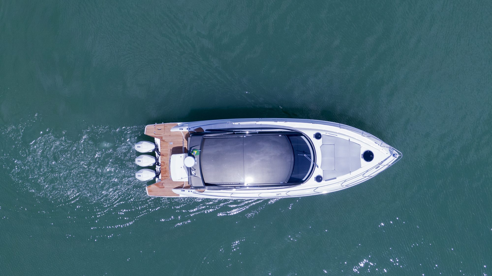
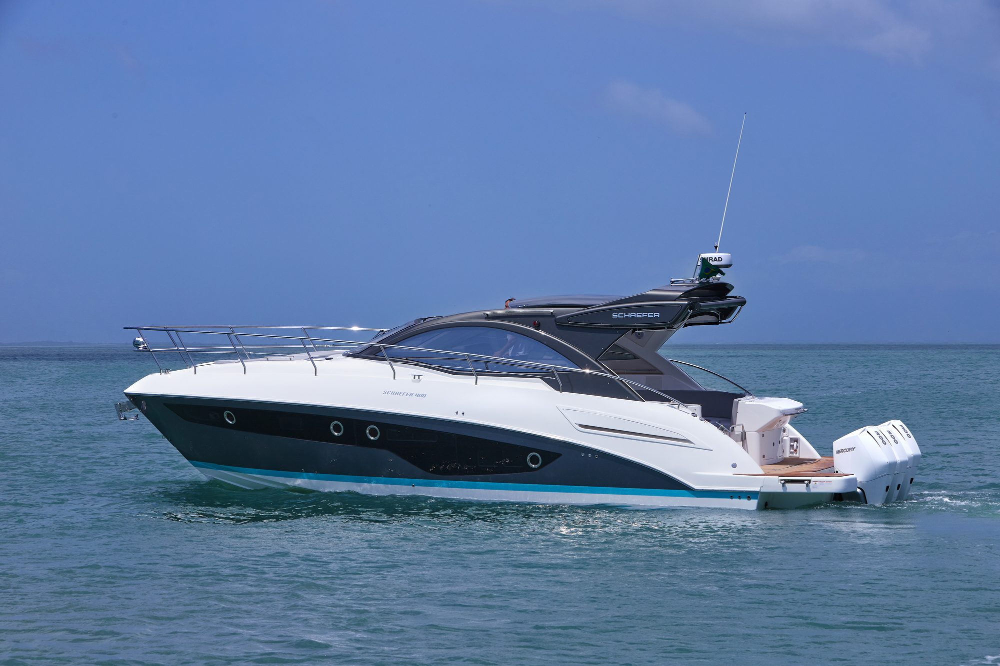

O estaleiro
Projetado, laminado
e acabado no Brasil.
Trinta e dois anos
de estaleiro.
A Schaefer Yachts é o maior estaleiro de iates do Brasil. Em três décadas de operação em Florianópolis, entregou quase quatro mil barcos entre 30 e 86 pés e mantém mais de 700 empregos diretos.
Todos os projetos são assinados por Marcio Schaefer, arquiteto naval e fundador do estaleiro. Duas versões da 510 são coassinadas com a Pininfarina.
Como são feitos
Produção verticalizada,
do casco ao estofado.
Infusão a vácuo em todas as peças
Processo raro no mercado náutico. A resina é puxada por vácuo através da fibra, o que reduz peso, elimina excesso de material e torna a laminação uniforme em toda a peça.
CNC de cinco eixos
Usinagem própria e exclusiva, usada na fabricação de moldes e componentes com tolerância controlada.
Marcenaria e estofaria próprias
Interiores produzidos dentro do estaleiro, o que encurta o ciclo de fabricação e amplia a margem de personalização de cada barco.
Certificação NMMA
A National Marine Manufacturers Association regula a segurança de embarcações nos Estados Unidos. A certificação submete o processo de produção ao padrão do mercado mais exigente do mundo.

A representação no Paraná.
A NP Yachts é representante oficial Schaefer Yachts em Londrina e atende clientes em todo o estado. A relação direta com o estaleiro cobre a configuração do barco, o acompanhamento da produção e o suporte após a entrega.
Sobre a NP Yachts